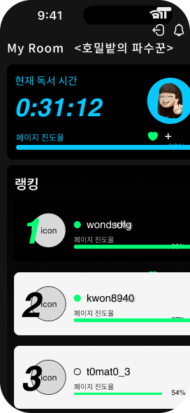
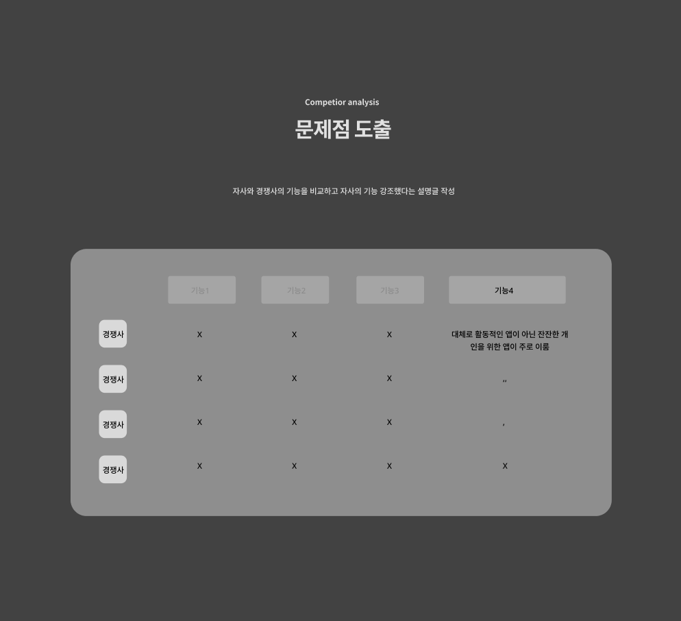

BOUTINE

Overview
독서도 러닝처럼
Boutine
요즘 사람들은 힙한 것, 감각적인 것, 나만의 취향을 사랑합니다. 운동, 카페, 전시회, 심지어 루틴까지도 스타일로 소비하죠.그런데 문득 이런 생각이 들었어요. “독서도 힙하게 할 수는 없을까?” 이 질문이 바로 Boutine의 시작이었습니다.

Video
Background
텍스트힘 유행 관련
배경 서사에 관한 간단한 설명 글
프로젝트 주요 이미지
